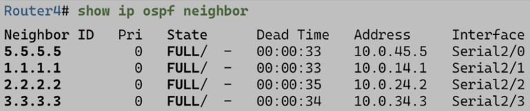

OSPF. Phase I - структура и этапы работы
OSPF пришел в мир для того, чтобы заменить RIP и его метрику оптимального маршрута, основанную на количестве прыжков до сети назначения. От RIP выгодно отличается более быстрой сходимостью и удобством масштабирования при помощи разделения сети на зоны.
Компоненты протокола
Протоколы маршрутизации в силу своей задачи имеют некоторую общую структуру, OSPF в данном случае не является исключением. OSPF состоит из:
-
Сообщения OSPF - используются маршрутизаторами для обмена информацией о маршрутах и проверки их актуальности:
- пакеты Hello
- пакеты DBD (Database Description)
- пакеты LS(A/U/R/Ack) (Link-State Advertisement/Update/Request/Acknowledgement)
-
Структуры данных - на основе сообщений собираются базы, на основе которых расчитываются маршруты и принимаются решения о маршрутизации пакетов. Рассмотрим на примере следующей топологии.

- ADB (Adjacency Database) - таблица смежности, содержащая роутеры, с которыми установлен двухсторонний обмен (TWO-WAY). Уникальна для каждого роутера.

- LSDB (Link-State Database) - таблица состояния каналов, она же таблица топологии, в которой содержится информация о всех маршрутизаторах в сети. Общая для всех роутеров (в идеале, если успевает синхронизироваться). Посмотреть:
show ip ospf database.

- FDB (Forwarding Database) - таблица маршрутизации, уникальна для каждого роутера. Посмотреть:
show ip route.

-
Алгоритм - Shortest Path First (SPF), он же алгоритм Дейкстры, он же алгоритм нахождения кратчайших путей от одной вершины до всех прочих. В OSPF он обсчитывается на каждом роутере, на основе чего составляется дерево SPF, в дальнейшем использующееся для определения лучших маршрутов для таблицы маршрутизации.
Этапы работы протокола или набросок OSPF за 5 минут
- Роутеры рассылают hello-пакеты из всех интерфейсов, на которых включен OSPF, и устанавливают отношения смежности с соседями.
- Смежные роутеры обмениваются данными о состоянии каналов при помощи лавинной (flood) рассылки LSA R1 посылает LSA всем своим соседям, R2 получает LSA и если он не дублируется существующим, пересылает его всем своим соседям и так до тех пор, пока все маршрутизаторы не получат все LSA.
- После получения объявлений LSA каждый роутер создает базу данных топологии LSDB. Если ему встретится незнакомая запись, то он запросит информацию о ней при помощи пакета LSR, на что целевой роутер ответит пакетом LSU с необходимой информацией.
- Каждый маршрутизатор выполняет алгоритм SPF, находя кратчайшие пути к каждой сети и создавая дерево кратчайшик путей SPF.
- На основе своего дерева SPF каждый маршрутизатор добавляет маршруты в таблицу маршрутизации, если отсутствует маршрут к той же сети с меньшим административным расстоянием, например статический.